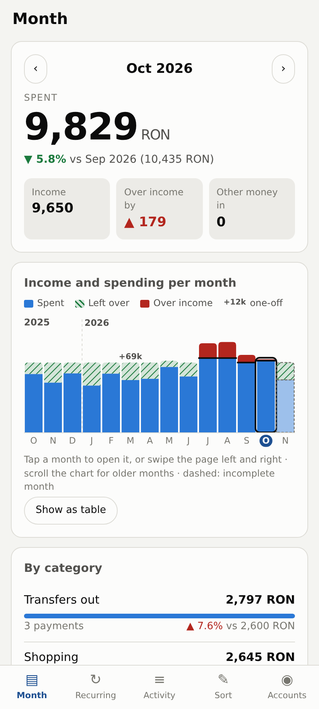
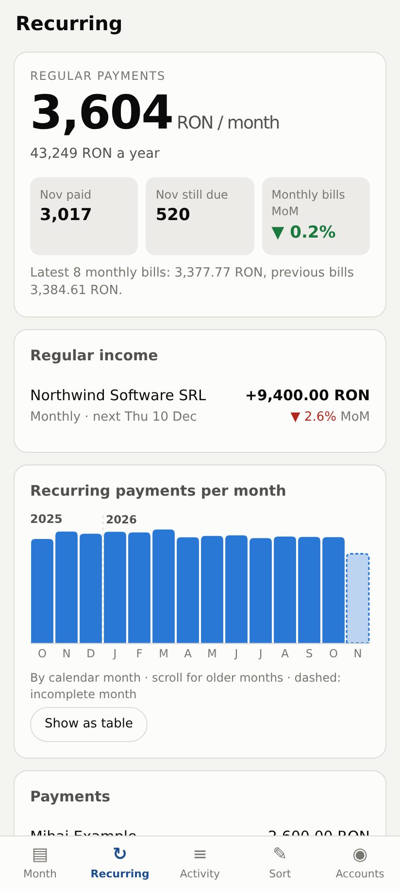
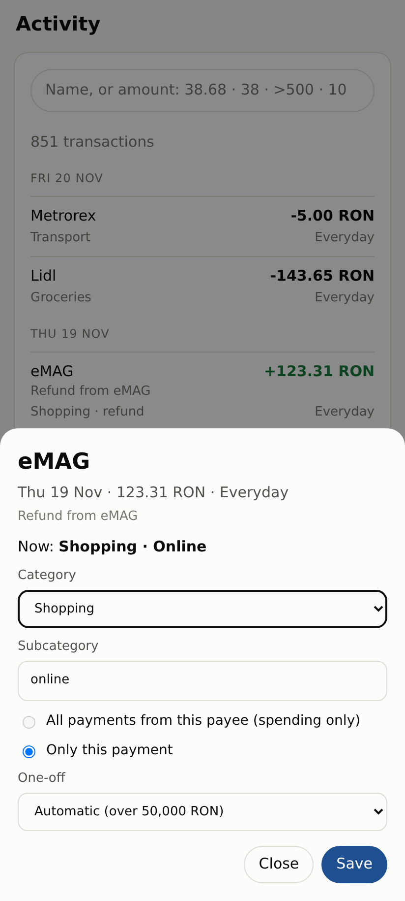
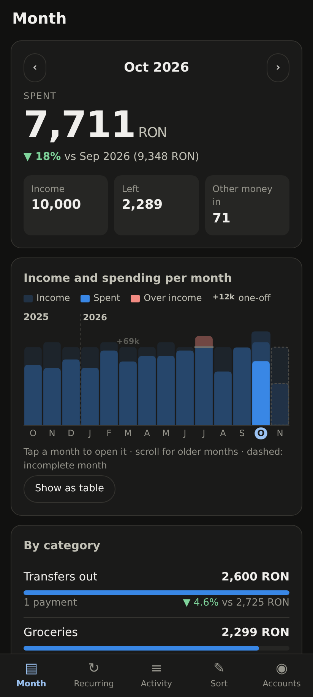

Your bank accounts, on your own server.
A self-hosted, read-only view of your own accounts through the Enable Banking PSD2 API. It answers two questions well: where did my money go, and what am I paying every month. With a private phone app, and an MCP server so an AI assistant can help, from a redacted view.




Screenshots show made-up data from the built-in demo.
What it does
Honest spending
Transfers between your own accounts are left out, refunds reduce their category, and very large one-offs (a car, a property) are shown apart instead of swamping the month.
Subscriptions and bills
Detected automatically, with the change from the previous bill, what is still due this month, and your regular income.
Alerts on your phone
A large payment, a low balance, a late salary, a price rise, a bank connection about to expire, a backup that stopped.
Private by design
Read-only bank access, data in one directory on your machine, the app only on your private network, each phone registered by invitation.
AI with a redacted view
A read-only MCP server: categories, amounts and known merchants, never people's names, IBANs or payment descriptions. Tested by a leak scanner.
Real bank quirks handled
Revolut pockets and top-ups, ING's description format, BRD's 20-transaction pages and one-consent rule. More for Romania.
Get started
git clone https://github.com/zandaulion/open-banking-hub.git && cd open-banking-hub uv sync uv run bankhub init # signing key and settings; prints the public key for Enable Banking
Or with Docker: docker compose pull, then docker compose run --rm app bankhub init.
Enable Banking's restricted production mode is free for your own accounts.
The full guide is in the README,
deployment details in DEPLOY.md.